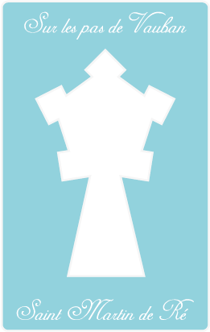
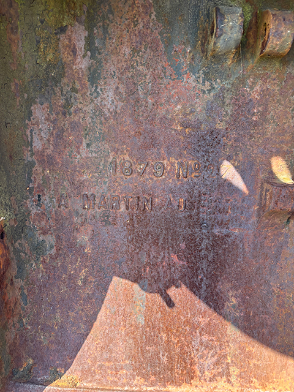

A Martin au ???

Tentatives restantes : 4
La « Ville Intra-Muros » et ses vides, le paradoxe de la cité idéale
Derrière la géométrie parfaite des remparts de Vauban se cache une anomalie urbaine unique en France. Lorsque l'ingénieur du Roi-Soleil dessine les plans de Saint-Martin-de-Ré, il voit grand, très grand. Il conçoit une enceinte gigantesque, capable non seulement d'abriter les habitants du bourg, mais aussi de servir de refuge à toute la population rurale de l'Île de Ré, ainsi qu'à leur bétail, en cas d'invasion anglaise.
Le projet est si ambitieux que l'espace sécurisé à l'intérieur des remparts dépasse largement les besoins réels de la population locale. Vauban avait imaginé une grille de rues géométriques pour combler ce vide, mais la croissance démographique et économique espérée n'a jamais eu lieu. Faute d'habitants pour la bâtir, la « ville idéale » est restée en partie inachevée.
C'est ce qui explique le paysage si particulier de Saint-Martin-de-Ré aujourd'hui : un contraste saisissant entre le cœur historique dense (autour du port) et les vastes espaces verts, parcelles agricoles et clos de vignes qui s'étendent toujours intra-muros, juste au pied des remparts. Ce qui devait être un réservoir militaire pour temps de guerre offre désormais à la cité un poumon vert exceptionnel, figé dans le tracé de pierre du XVIIe siècle.
Voici votre indice : La deuxième molette est un nombre impair et est strictement supérieur à 5.